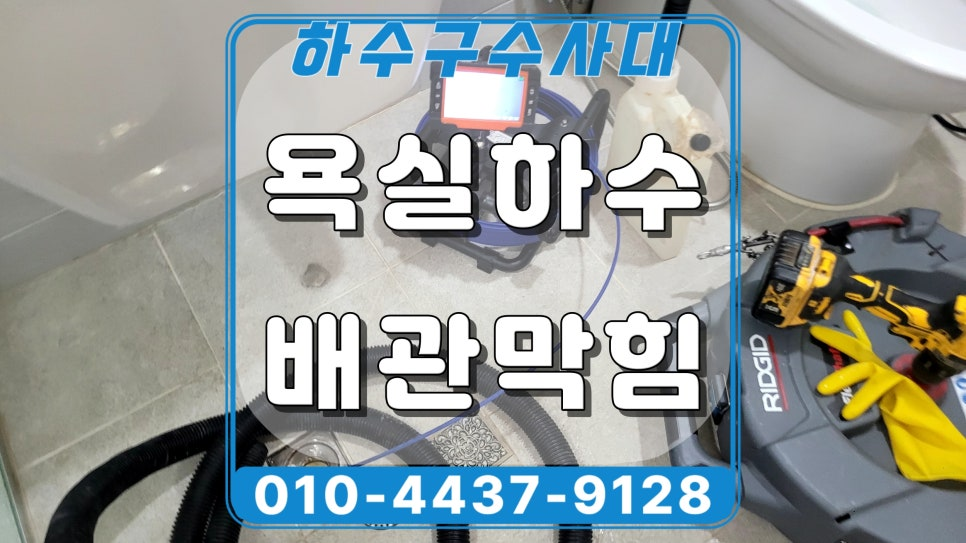
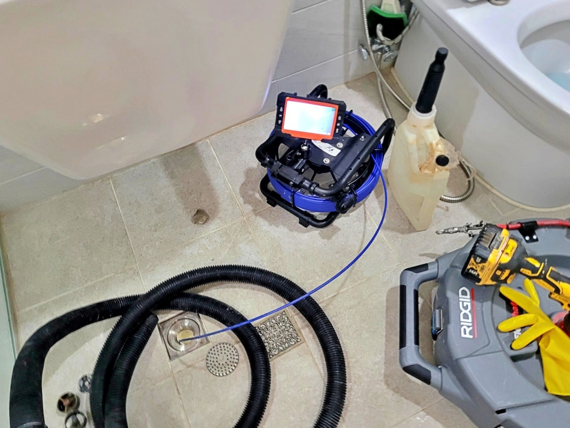
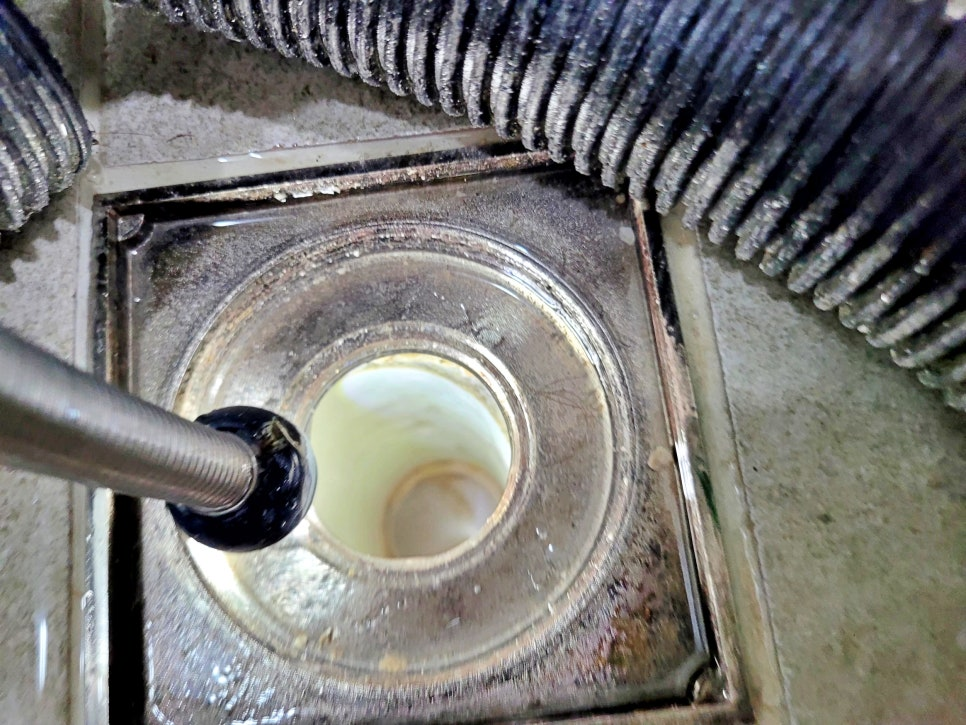
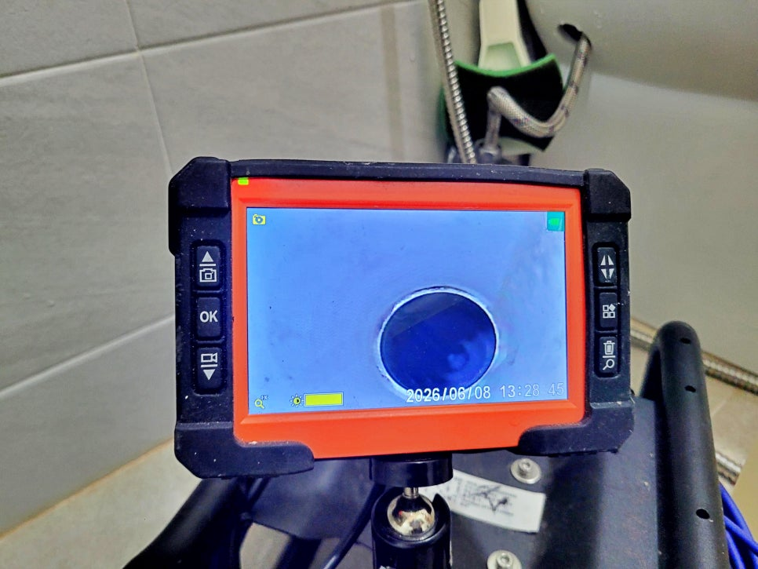
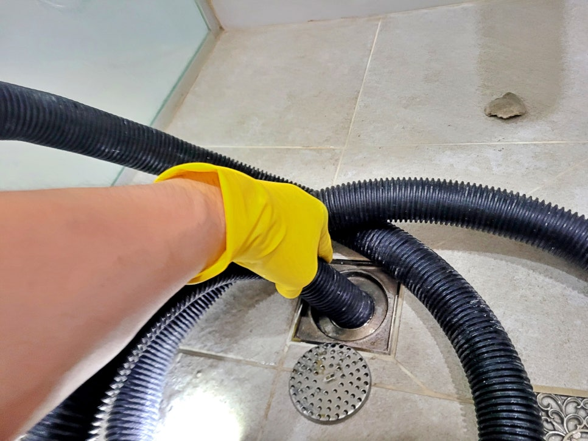
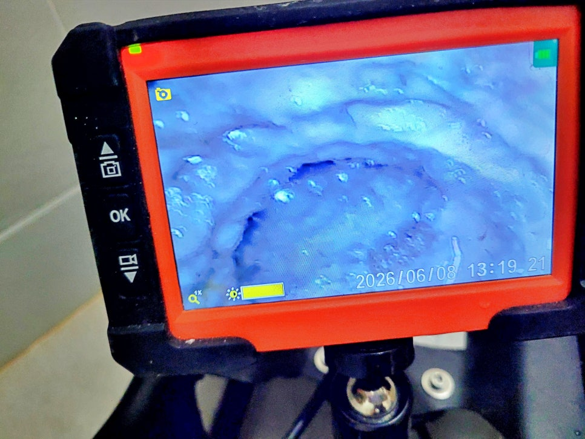
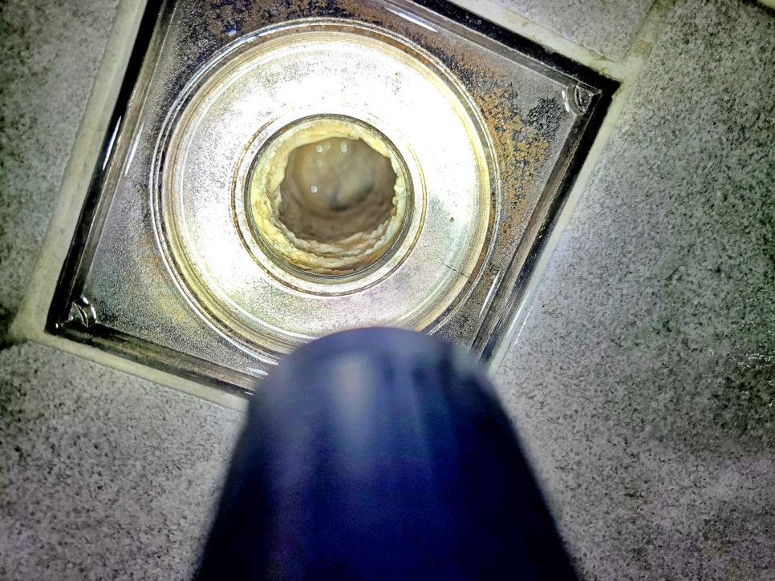

🏠 권선구 곡선동 욕실 하수구역류, 하수관 석회 제거 청소로 해결
수원 하수구막힘 전문 시공 후기

📋 작업 개요
- 위치: 수원
- 서비스 유형: 하수구막힘, 배관막힘, 역류해결, 뚫는업체, 배관청소
- 작업 일시: 12시간 전
- 업체명: 하수구수사대 (010-5615-2118)
🔍 문제 상황
권선구 곡선동 욕실 하수구막힘을
석회 제거 청소로 해결하다.
안녕하세요.
수원 권선구 곡선동 하수구막힘과
욕실 하수구역류를 해결하는
하수구수사대입니다.
이번 현장은 권선구 곡선동에 있는
욕실 하수구역류 현장입니다.
욕실 바닥 배수구 쪽으로 물이
시원하게 빠지지 않고, 사용한 물이
다시 올라오는 증상이 있어
현장 확인을 진행했습니다.
내시경 카메라를 배관에 삽입하는 중
처음에는 단순 머리카락 막힘이나
비누 찌꺼기 정도로 보일 수 있지만,
이런 현장은 배관 안쪽을 확인하지 않고
겉만 뚫으면 금방 다시 막힐 수 있습니다.
1. 권선구 곡선동 욕실 하수구역류
원인은?
욕실 배수구를 열고 내시경 장비로
하수관 내부 상태를 확인했습니다.
확인 결과 배관 안쪽에 석회가
두껍게 붙어 있었습니다.

🔎 원인 분석
💡 전문가 진단: 권선구 곡선동 욕실 하수구막힘을석회 제거 청소로 해결하다.
물때와 비누 성분, 세제 찌꺼기,
생활 오염물이 오래 쌓이면
배관 벽면에 단단하게 굳어
물이 지나가는 공간을 좁힙니다.
내시경 카메라로 하수관을 보는 사진
이번 현장도 단순 이물질 막힘보다는
하수관 안쪽에 굳어 있는 석회가
배수 흐름을 막고 있던 상태였습니다.
이런 경우 억지로 한 번 뚫는 방식으로는
해결이 깔끔하지 않습니다.
배관 안에 붙은 석회를 부수고,
부서진 찌꺼기까지 빼내야 다시
역류하는 가능성을 줄일 수 있습니다.
석션 장비로 석회 제거하는 모습
2. 하수관 석회 제거 청소는
어떻게 진행할까요?
먼저 배관 상태에 맞춰 약품을 사용해
굳어 있는 석회층을 불려주었습니다.
무조건 약품만 붓는 방식은 배관
상태에 따라 부담이 될 수 있어 현장
상황을 보면서 작업해야 합니다.
이후 샤프트 장비를 넣어
배관 벽면에 붙어 있던 석회를
조금씩 갈아내고 부숴가며

🔧 작업 과정
청소했습니다.
샤프트 작업은 단순 관통이 아니라
배관 안쪽에 붙은 찌꺼기를
물리적으로 제거하는 과정입니다.
석회가 떨어져 나오면 그대로
배관 안에 남겨두면 안 됩니다.
그래서 석션 장비를 이용해
부서진 석회 찌꺼기와 오염물을
함께 흡입했습니다.
작업 중간마다 내시경으로
배관 내부를 다시 확인하며
막힌 구간이 남아 있는지
점검했습니다.
욕실 하수구역류는 뚫렸다고
끝나는 작업이 아닙니다.
내시경 카메라로 배관 재점검 하는 모습
물을 흘려보냈을 때 배수가 안정적인지,
배관 안쪽에 걸리는 구간이 남았는지,
석회 찌꺼기가 다시 밀려오지 않는지
확인해야 마무리할 수 있습니다.
이번 권선구 곡선동 현장도
약품, 샤프트, 석션 작업을 함께
진행한 뒤 욕실 배수 상태를 다시
확인했습니다.
물이 고이지 않고 정상적으로
빠지는 것을 확인한 후 작업을
마쳤습니다.
이번 현장 하수구역류 원인
욕실 배수구에서 물이 천천히 빠지거나
한 번씩 역류가 반복된다면 겉에 보이는
배수구만 볼 문제가 아닙니다.
하수관 안쪽에 석회가 쌓였는지,
배관 구배나 내부 상태에 문제가 있는지
확인하는 과정이 필요합니다.
오늘 소개한 현장은 하수구역류
증상을 겉으로만 뚫고 끝낸 것이
아니라, 배관 안쪽 상태를 확인한 뒤


✅ 작업 완료
석회가 쌓인 원인까지 정리했는데요.
지금 욕실 하수구막힘이나 배수
불량으로 불편을 겪고 있다면
하수구수사대로 연락 주셔서
문제를 해결받으시기 바랍니다.
그럼 지금까지 권선구 욕실
하수구역류, 하수관 석회 제거
청소로 해결 후기를 정독해
주셔서 감사합니다.
#권선구하수구막힘 #곡선동하수구막힘 #수원하수구역류 #욕실하수구역류 #하수관석회제거 #욕실배수구막힘 #배관청소 #샤프트청소 #하수구수사대




⚠️ 하수구 배관 막힘 예방 및 관리 가이드
- ✅ 머리카락, 비닐, 물티슈 등 물에 분해되지 않는 이물질은 하수구 유입을 절대 금지해 주세요.
- ✅ 하수구 거름망을 씌우고 모여진 이물질은 주기적으로 쓰레기통에 바로 비워주셔야 합니다.
- ✅ 배관 노후가 심할 경우 이물질이 더 쉽게 걸리므로 주기적인 배관 세척(고압세척 등)을 권장합니다.
- ✅ 작업 후 1년 이내 재발 시 하수구수사대에서 무상 A/S 보증 서비스를 제공합니다.
💡 핵심 정리
- 확실한 장비 작업(내시경 점검 및 샤프트 스케일링)으로 원인을 뿌리 뽑습니다.
- 작업 후 1년 이내에 동일한 부위 재발 시 100% 무상 A/S 서비스를 보장합니다.
- 서울 · 경기 · 인천 전 지역에 24시간 언제든 긴급 출동할 수 있도록 항시 대기 중입니다.
❓ 자주 묻는 질문 (FAQ)
🚨 수원 하수구막힘 문제로 고민이신가요?
정확한 원인 진단과 확실한 시공으로 재발 없는 해결을 약속드립니다.
24시간 긴급 출동 | 서울 · 경기 · 인천 전지역 | 1년 내 재발 시 무상 A/S